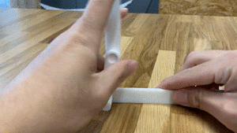

<h1><font size="5">更新Ⅻ　リンク機構試作</font></h1><br><br>
</img><br>
</img><br>
<br><br>
<font size="5">作成理由　</font><br>
<font size="3">クランクの作成でパーツごとに分けて作成し、つなぎ合わせる方法は何かに応用できるのではと感じ、作成をしてみた。<br>
さらに改良を重ねていき、十徳ナイフのように場面に応じて適切な久具が取り出せる草刈り器具を目指していく。
</font>

